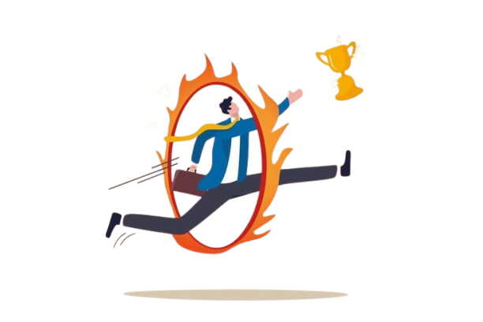

INSPIRATION - is something that makes someone want to do something or that gives someone an idea about what to do or create. Nevertheless, I think and believe that there is much more to this word. Inspiration is something that motivates you to be better and do better.
.png)
AMBITION - When I read about people who are full of ambition, it gets me excited and inspired. Especially those who have achieved a lot and continue to push for more out of choice. For me, it is an attractive trait for anybody to have. And it keeps me going even when I don’t feel like continuing after having a bad day.
.png)
DOING NEW THINGS - I am the type of person who rearranges my room every 6 months or so because I can get bored with the layout if it stays for a long time. I like trying something in a new way, with a new approach, a new idea, etc. Doing something new is a source of inspiration to me, too much of the same can eventually get too mundane.
.png)
CHALLENGE - can be very hard in life. If you are not the most enthusiastic about challenging yourself constantly, then it may not be a source of inspiration for you. For me, being challenged and going out of my way to push to the next level is inspiring.
PARENTS - Love is an amazing thing; the support and respect and magic that it provides never fails. The love, support, and hard work from my mama and papa to raise, shelter, educate and nurture me are commendable and I know I am lucky to have them. Thier love for me inspires me to keep pushing in life.
.png)
FRIENDS - Everywhere I have lived or find myself in this life I have had great friends around me. They have helped me through tough times and celebrated with me in good times. They have shown me the kind of love that exists through respect and mutual adoration. Their love inspires me.
.png)
FAITH - I don’t necessarily mean religion, although that is part of it. The faith I’m talking about here is the ability to have faith when times are hard. Faith that I will win; faith that life will move on and things will be fine in some way, somehow, even when it doesn’t seem like it at the time. That is inspiring and it inspires me a lot.
.png)
ADVENTURE - To me, adventure is an exciting and remarkable experience. I love visiting new places that I have never been to before, seeing new things. It inspires me. What gives me inspiration is enjoying the calmness of Gods creation. I like hills, green vegetations which opens my heart to my inner creativity.
.png)
HAPPINESS - You know that look on someone’s face when they are smiling and their eyes are bright and their body language is open and cheerful; that full of happiness is inspiring to see. It’s awesome. It’s contagious and also inspiring. Those happy moments, those beautiful smile inspires me.
.png)